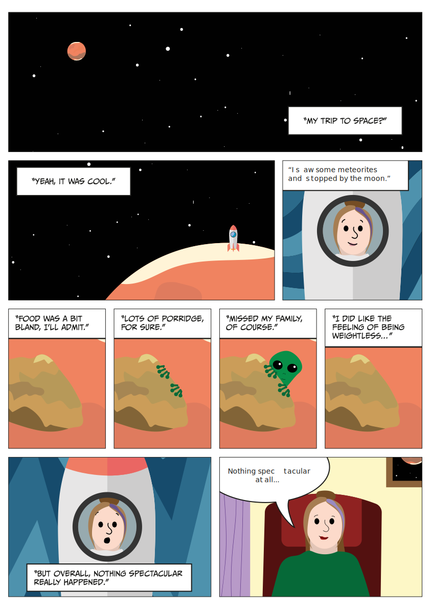

m. bengtsson
hem
om
projekt
kontakt
infografisk poster, utvecklad i samarbete med Serina Salovaara, Emma Hedlin, Yara Pusunc och Sebastian Agerlid Nilsson

seriestripp med fokus på McClouds designprinciper
animation med fokus på Tuftes designprinciper